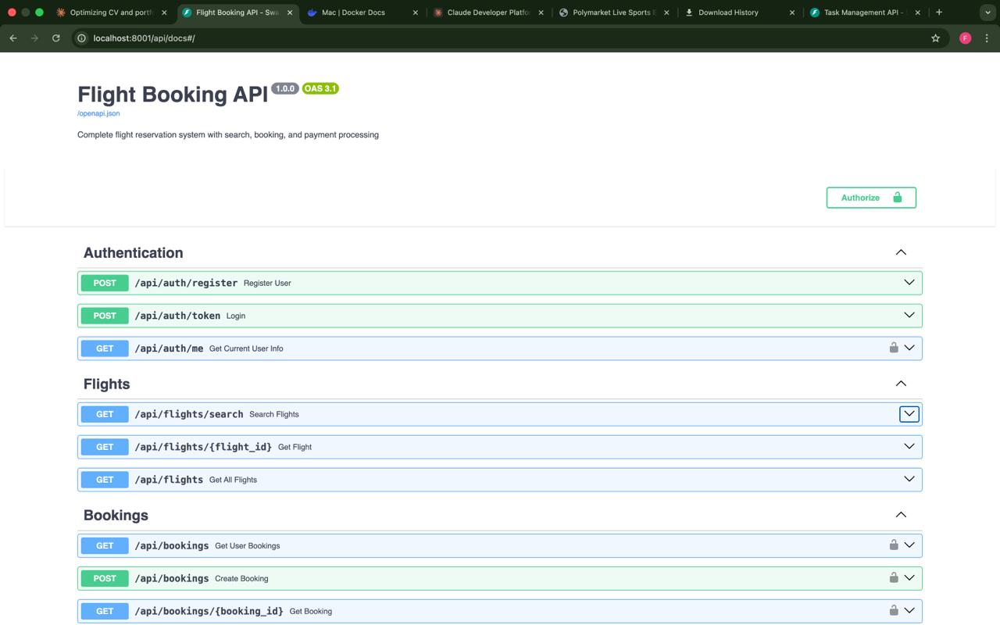
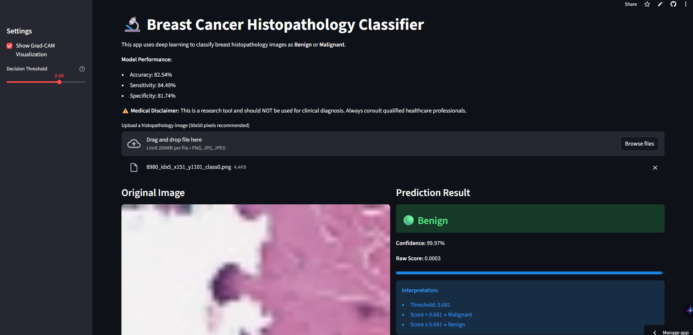
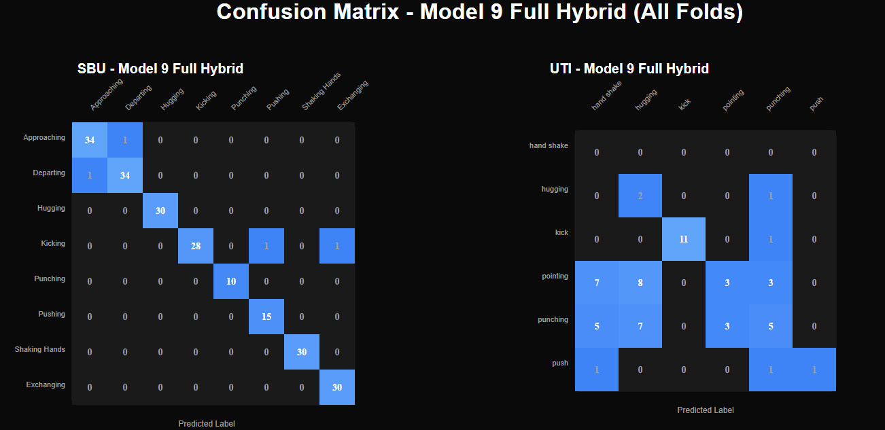

Private website builds
Several product-style sites are being designed and assembled. They are not all ready for public links yet.
Python backend developer · AI tools · product systems
My work sits around APIs, data models, ML-powered features, civic tech, scientific workflows, and product experiments. Some projects are public. Some are private. The common thread is that I like building things that actually run.
/now
I am actively building beyond the public repos: websites, product ideas, backend platforms, and private systems. This section is intentionally honest about what is public, private, and still in progress.
Several product-style sites are being designed and assembled. They are not all ready for public links yet.
API work around authentication, dashboards, data ingestion, and admin flows. I will publish case notes when each one is ready.
This site is now part of the work: dark mode, project filtering, command interface, and a structure that can keep expanding.
/systems
Public projects, private builds, and applied ML work. The goal is not to list every tool I have touched. It is to show the kind of problems I keep taking on.

A civic-tech platform for tracking Nigeria's National Assembly members with search, scoring, JWT auth, PostgreSQL, Redis, and data enrichment workflows.
Product search and recommendation system using vector search, OCR input, CNN product detection, and a production-scale transaction dataset.
/lab
Smaller does not mean less serious. These projects show the range: scientific tooling, medical imaging, graph neural networks, and computer vision apps.



Streamlit app that classifies produce images, estimates retail price, and returns top class probabilities.
/stack
FastAPI, Django REST Framework, Flask, REST design, JWT, OpenAPI, Pydantic, SQLAlchemy.
PostgreSQL, Redis, migrations, seed scripts, pandas, ETL, data modeling, query design.
React, Vite, Streamlit, responsive UI systems, dark interfaces, dashboards, product pages.
PyTorch, TensorFlow, vector search, OCR, CNNs, Grad-CAM, model-backed APIs.
Docker, Linux, GitHub, Vercel, environment config, local-first development workflows.
More production UI work, deeper frontend systems, and stronger written case notes for private builds.
/contact
Send the problem, the constraints, and what already exists. I can usually tell quickly where I can help.